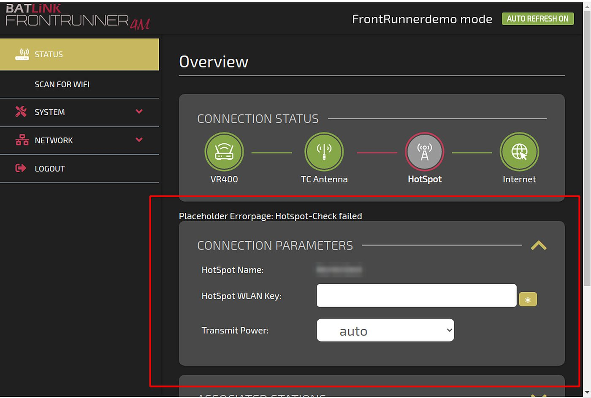
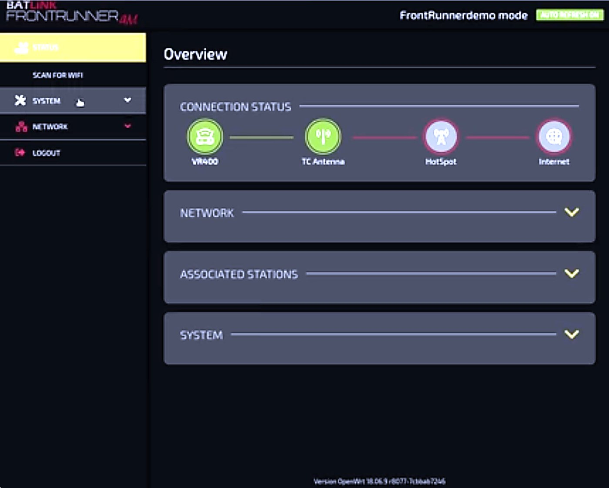
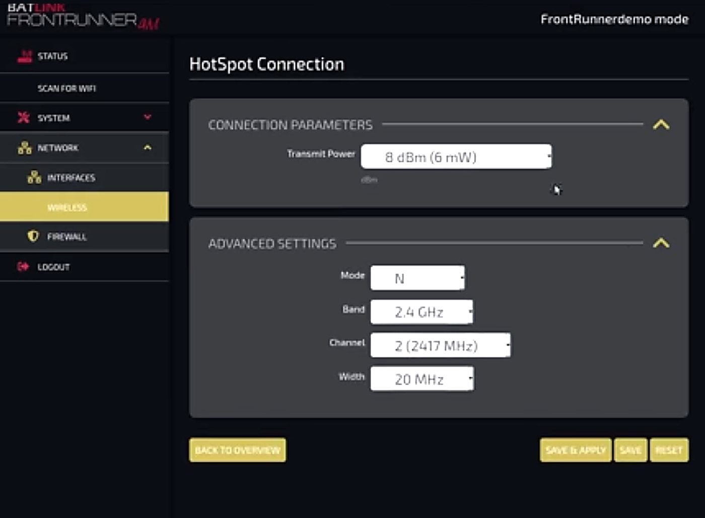
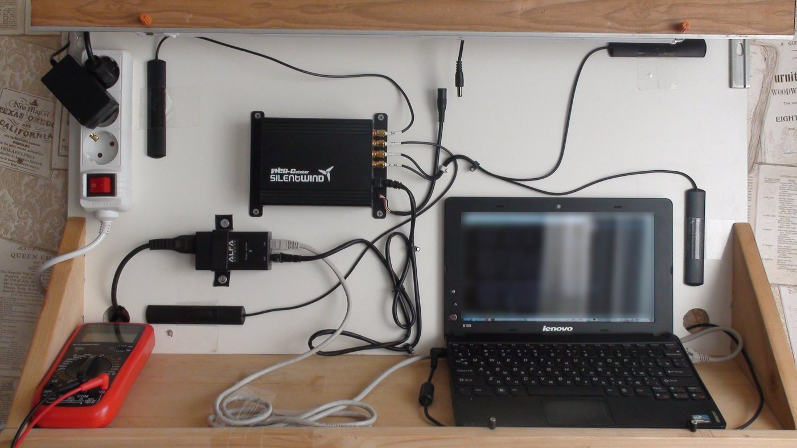

2021 · Batlink (Germany)
Hotspot connection page for the Batlink TravelConnector
Batlink TravelConnector sets bring internet to motorhomes and boats by connecting an onboard router to distant Wi-Fi hotspots or LTE. As a remote contractor I built the LuCI web page that configures the router's connection to a remote hotspot, following the client's UI design specification.
What I did
- Set up a remote development workflow on a device located in Germany, with live code editing on the router.
- Evaluated two LuCI approaches — auto-generated CBI forms and hand-written templates — and chose a hybrid: CBI with custom templates. This kept the built-in logic for dependent parameters while delivering the required collapsible layout.
- Combined settings from several configuration sections into one clear form; tested in Firefox and Chrome.
- Delivered in short increments with screencasts, so the client could review and steer the work.
- Where a full solution would have cost disproportionate time, proposed a lightweight workaround and explained the trade-off so the client could decide.



Test bench
For hands-on testing I kept the router on a wall-mounted bench with a PoE injector, labelled 2.4/5 GHz antennas, a switched power strip for power-cycle tests, a multimeter and a console laptop.

Result
Delivered within six weeks, with daily progress reports to the client's team lead.